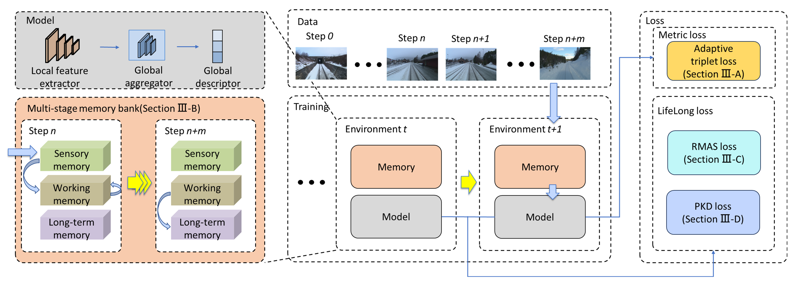
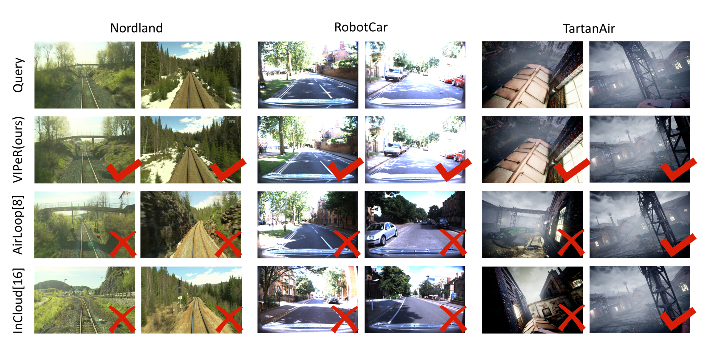
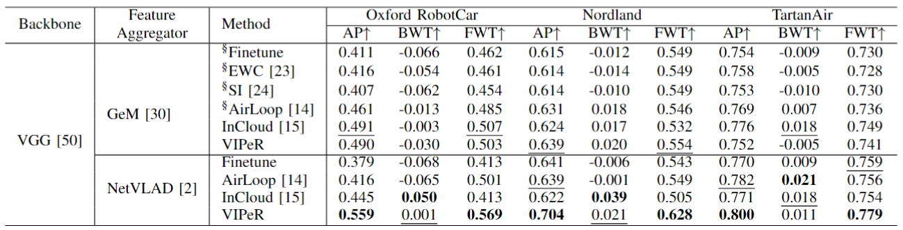

Visual place recognition (VPR) is essential to many autonomous systems. Existing VPR methods demonstrate attractive performance at the cost of limited generalizability. When deployed in unseen environments, these methods exhibit significant performance drops. Targeting this issue, we present VIPeR, a novel approach for visual incremental place recognition with the ability to adapt to new environments while retaining the performance of previous ones. We first introduce an adaptive mining strategy that balances the performance within a single environment and the generalizability across multiple environments. Then, to prevent catastrophic forgetting in continual learning, we design a novel multi-stage memory bank for explicit rehearsal. Additionally, we propose a probabilistic knowledge distillation to explicitly safeguard the previously learned knowledge. We evaluate our proposed VIPeR on three large-scale datasets---Oxford Robotcar, Nordland, and TartanAir. For comparison, we first set a baseline performance with naive finetuning. Then, several more recent continual learning methods are compared. Our VIPeR achieves better performance in almost all aspects with the biggest improvement of 13.85% in average performance.
Here we present the performance on the TartanAir, Nordland, and RobotCar datasets.

We first set a baseline performance with naive finetuning on both of the VPR methods we experimented with. In addi tion, we also explore the performance of two generic weight regularization methods in continual learning, EWC and SI. For more recent methods, we compare our proposed VIPeR to AirLoop and InCloud, which are specifi cally designed for visual incremental place recognition. Since AirLoop only supports the combination of VGG-19 and GeM, and InCloud takes in only LiDAR point clouds, both are modified and re-trained, using their official implementation, to get comparison results.

@ARTICLE{10873856,
author={Ming, Yuhang and Xu, Minyang and Yang, Xingrui and Ye, Weicai and Wang, Weihan and Peng, Yong and Dai, Weichen and Kong, Wanzeng},
journal={IEEE Robotics and Automation Letters},
title={VIPeR: Visual Incremental Place Recognition with Adaptive Mining and Continual Learning},
year={2025},
volume={},
number={},
pages={1-8},
keywords={Continuing education;Visualization;Training;Measurement;Atmospheric modeling;Adaptation models;Computational modeling;Data mining;Probabilistic logic;Image recognition;Localization;Recognition;Continual Learning},
doi={10.1109/LRA.2025.3539093}}
We thank the authors of AirLoop for open sourcing their work.